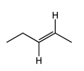
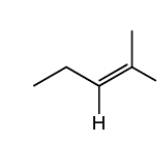
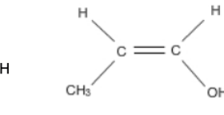
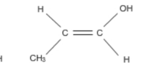
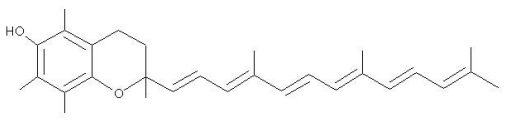
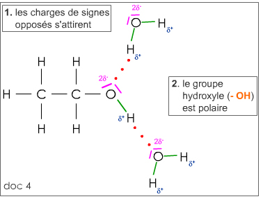
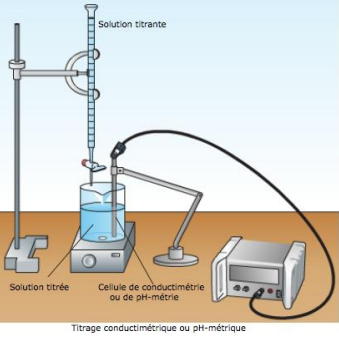
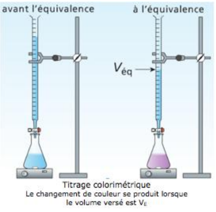

Mélange stœchiométrique
Un mélange est stœchiométrique si les quantités initiales des réactifs sont dans les proportions des nombres stœchiométriques des réactifs. Ainsi, pour la réaction d'équation :
Exemple d'application
Isomérie Z/E
Un composé de formule A−CH=CH−B, où A et B ne sont pas des atomes d'hydrogène, présente deux isomères notés Z (substituants prioritaires du même côté) et E (substituants prioritaires de part et d'autre de la double liaison).
Z ou E ?




Liaisons conjuguées & couleur
Des doubles liaisons séparées par une liaison simple sont dites conjuguées. Les molécules d'espèces organiques colorées présentent souvent de nombreuses liaisons conjuguées : la couleur d'une solution résulte de la superposition des radiations non absorbées de la lumière blanche.
Compter les liaisons conjuguées

Liaison hydrogène
Une liaison hydrogène se forme lorsqu'un atome H, alors lié à un atome A très électronégatif, interagit avec un atome B, lui aussi très électronégatif et porteur d'un doublet non liant. A et B peuvent être le fluor F, l'oxygène O, l'azote N, le chlore Cl…
Les molécules d'alcools et d'acides carboxyliques peuvent participer à des liaisons hydrogène.

- Chapitre « composition initiale » : mesure de l'absorbance et relation entre l'absorbance et la concentration (déjà proportionnelle !).
- Chapitre « Évolution d'un système chimique » et TP sur le titrage : un titrage permet de déterminer une concentration inconnue en faisant réagir l'espèce titrée avec un réactif titrant.
Principe de la spectroscopie
Une espèce chimique est susceptible d'interagir avec un rayonnement électromagnétique. L'étude de l'intensité du rayonnement, absorbé ou réémis, en fonction des longueurs d'onde est l'analyse spectrale. La spectroscopie est l'étude quantitative des interactions entre la lumière et la matière.
Dans un spectrophotomètre, on fait passer une radiation électromagnétique à travers une solution. On mesure l'intensité I de la radiation transmise et on la compare à l'intensité I₀ de la radiation incidente ; pour certaines longueurs d'onde, I < I₀ : la solution a absorbé de l'énergie.
Loi de Beer-Lambert
Il faut C < 0,1 mol·L⁻¹ pour éviter la saturation du spectrophotomètre (A > 2 et Itransmis < 1 %) : c'est le domaine de validité de la loi. Si plusieurs espèces colorées sont présentes en solution, leurs absorbances s'additionnent : A = ΣAi = Σεi·l·Ci.
🧪 Activité expérimentale virtuelle — Vérifier la loi de Beer-Lambert
À l'aide du simulateur PhET « Beer's Law Lab » (onglet Beer's Law, pas l'onglet Concentration), tu vas mesurer l'absorbance d'une solution colorée pour différentes concentrations, comme au laboratoire.
- 1Choisis une solution colorée dans le menu déroulant (par exemple le permanganate de potassium KMnO₄, violet).
- 2Clique sur le bouton « λ at max absorbance » pour te placer à la longueur d'onde λmax de l'espèce choisie (justifie sur ton cahier pourquoi on travaille toujours à λmax en pratique).
- 3Fixe la largeur de cuve (cuvette width) à 1 cm et fais varier la concentration C (curseur ou champ numérique) sur 6 à 8 valeurs réparties entre 0 et la valeur maximale.
- 4Pour chaque concentration, relève l'absorbance A affichée par le détecteur et note le couple (C ; A) sur ton cahier.
- 5Complète ci-dessous le programme Python avec tes mesures pour tracer la courbe d'étalonnage A = f(C) et en déduire le coefficient d'absorption molaire ε.
Spectre UV-visible et couleur
Le spectre UV-visible représente l'absorbance en fonction de la longueur d'onde, entre 200 et 800 nm. Il présente une ou plusieurs bandes d'absorption assez larges passant par un maximum d'absorption λmax.
Lorsqu'une espèce chimique n'absorbe que dans un seul domaine de longueurs d'onde du visible, sa couleur perçue est la couleur complémentaire de celle des radiations absorbées (deux couleurs diamétralement opposées sur le cercle chromatique sont complémentaires).
QCM — Analyse spectrale UV-visible
Principe de la spectroscopie IR
La spectroscopie IR repose sur le même principe que la spectroscopie UV-visible, mais dans le domaine de longueur d'onde 2500 – 25000 nm : le rayonnement électromagnétique interagit avec les liaisons covalentes de la molécule. Celle-ci subit alors des mouvements de vibration d'élongation ou de déformation ; certaines liaisons absorbent de l'énergie et changent de fréquence de vibration, faisant apparaître des bandes d'absorption dans le spectre.
L'association des molécules d'alcools par liaison hydrogène provoque la diminution de la valeur du nombre d'onde σ du maximum d'absorption de la liaison O–H et l'élargissement de la bande d'absorption. La liaison O–H étant affaiblie, on a besoin de moins d'énergie pour la faire vibrer ; par conséquent λ est plus longue et σ plus petit.
QCM — Spectroscopie IR
🧪 Activité — Identifier une fonction chimique à partir du spectre IR
À l'aide de l'outil Ostralo « Spectre infrarouge d'une molécule », tu vas comparer les spectres IR de trois molécules de fonctions différentes et en extraire la bande la plus caractéristique de chacune.
- 1Sélectionne un alcool (par exemple le propan-1-ol) : clique sur les liaisons du tableau pour repérer la bande la plus caractéristique de la fonction alcool, et relève son nombre d'onde.
- 2Fais de même avec un acide carboxylique (par exemple l'acide propanoïque).
- 3Fais de même avec un aldéhyde ou une cétone (par exemple le propanal ou la propanone).
- 4Complète les trois lignes ci-dessous à partir de tes observations, puis clique sur « Vérifier ».
Dosage avec un spectrophotomètre
On prépare une gamme étalon de solutions filles, de concentrations C connues, par dilution d'une solution mère. La mesure de l'absorbance A de chaque solution permet de tracer la courbe d'étalonnage A = f(C). Ce graphe est une droite qui passe par l'origine, car d'après la loi de Beer-Lambert, il y a une relation de proportionnalité entre A et C.
- Repérer A₀ sur l'axe des ordonnées et tracer une droite horizontale jusqu'à la courbe d'étalonnage.
- Depuis le point d'intersection, tracer une droite verticale jusqu'à l'axe des abscisses.
- Lire C₀, la concentration cherchée, sur l'axe des abscisses (ou calculer C₀ = A₀ / (ε×l)).
Nouvelle grandeur : la conductivité σ
Les ions présents dans une solution assurent le passage du courant électrique. On exprime la facilité qu'a le courant à circuler à l'aide d'une grandeur appelée conductivité d'une solution, notée σ. Elle est d'autant plus importante que les ions sont mobiles, que leurs concentrations sont élevées, et que la température de la solution est élevée.
La conductivité molaire ionique λ traduit l'aptitude d'un ion à conduire le courant électrique ; elle peut varier avec la température.
🔎 Exploiter la conductivité ionique molaire
La conductivité totale σ se décompose en la somme des contributions de chaque ion présent. Mais tous les ions ne conduisent pas aussi bien le courant : leur conductivité molaire ionique λ peut varier du simple au septuple !
| Ion | H₃O⁺ | HO⁻ | Cl⁻ | K⁺ | Na⁺ | CH₃COO⁻ |
|---|---|---|---|---|---|---|
| λ (mS·m²·mol⁻¹) | 34,98 | 19,8 | 7,63 | 7,35 | 5,01 | 4,09 |
Loi de Kohlrausch
Pour une solution ne contenant qu'un seul soluté suffisamment dilué, on utilise des solutions filles de concentrations C connues (préparées par dilution d'une solution mère). La mesure de la conductivité σ de chaque solution permet de tracer la courbe d'étalonnage σ = f(C), une droite passant par l'origine :
La méthode ne peut être utilisée que pour des solutions suffisamment diluées et ne contenant qu'un seul soluté ionique.
QCM — Dosage par étalonnage conductimétrique
📊 Exemple guidé — dosage d'une solution de chlorure de sodium
On souhaite déterminer la concentration C₀ inconnue d'une solution de chlorure de sodium (Na⁺ + Cl⁻). On prépare 5 solutions étalons par dilution et on mesure leur conductivité σ :
| C (mol·m⁻³) | 2,0 | 4,0 | 6,0 | 8,0 | 10,0 |
|---|---|---|---|---|---|
| σ (mS·m⁻¹) | 25,3 | 50,6 | 75,8 | 101,1 | 126,4 |
La solution inconnue est mesurée à σ₀ = 63,2 mS·m⁻¹.
- Vérifier que σ = f(C) est bien une droite passant par l'origine (loi de Kohlrausch).
- Calculer la pente k à partir de deux points de mesure : k = Δσ / ΔC.
- Utiliser σ₀ = k × C₀ pour calculer C₀.
Exercice 1 — calcul de σ à partir des ions présents
Exercice 2 — déterminer une concentration à partir d'un étalonnage
Vocabulaire du titrage
Réaliser un titrage, c'est déterminer une quantité de matière ou une concentration à l'aide d'une méthode qui met en jeu une réaction chimique appelée réaction support de titrage. Cette réaction doit être totale, rapide et unique.
Un titrage nécessite une solution titrée (contenant le réactif dont la concentration est à déterminer) et une solution titrante (contenant le réactif de concentration connue, ajoutée généralement à l'aide d'une burette graduée).
- On introduit progressivement le réactif titrant B dans le bécher contenant la solution du réactif titré A, de volume VA.
- Au début du titrage, B est entièrement consommé par A dont la quantité de matière diminue progressivement : B est le réactif limitant.
- À un moment donné, tout le réactif A est consommé : les deux réactifs sont alors introduits dans les proportions stœchiométriques. C'est l'équivalence.
- Si on continue à verser B, il devient en excès (A est déjà entièrement consommé) : A devient le réactif limitant.
L'équivalence correspond donc au changement de réactif limitant.
Volume équivalent VE
Le volume équivalent VE est le volume de solution titrante qu'il faut ajouter à la solution titrée pour que le réactif titrant et le réactif titré soient dans les proportions stœchiométriques de la réaction support de titrage.
Exercice — TP dosage de l'acide chlorhydrique
🧪 Activité — Simuler un titrage avec l'application Hatier-clic
Cette application interactive te permet de réaliser un titrage virtuellement, comme au laboratoire : choix des réactifs, ajout progressif du réactif titrant à la burette, repérage de l'équivalence.
- 1Prends d'abord en main l'application (identifie la burette, le bécher contenant la solution titrée, et le dispositif de suivi proposé).
- 2Ajoute progressivement le réactif titrant et observe l'évolution de la grandeur suivie (pH, conductivité ou couleur selon l'activité proposée).
- 3Repère le volume équivalent VE à l'aide de la méthode adaptée à la grandeur suivie.
- 4Utilise la relation à l'équivalence (CA·VA/a = CB·VE/b) pour déterminer la concentration ou la quantité de matière demandée par l'activité.
Titrage suivi par conductimétrie
Un titrage conductimétrique est envisageable quand la réaction support fait intervenir des ions ; il consiste au suivi de l'évolution de la conductivité de la solution titrée pour chaque ajout de volume V de solution titrante. La courbe σ = f(V) présente un point de rupture de pente qui permet de repérer l'équivalence.

💻 Programme à compléter — Simuler la courbe de titrage conductimétrique
L'objectif de cet exercice est de tracer la courbe de titrage conductimétrique σ = f(V) simulée par un programme Python, pour le titrage de HCl (VA = 20,0 mL) par NaOH (cB = 0,10 mol·L⁻¹). Il faut d'abord obtenir les quantités de matière des 4 ions impliqués (H₃O⁺, Cl⁻, Na⁺, HO⁻), avant et après l'équivalence.
Titrage suivi par pH-métrie
Un titrage pH-métrique est envisageable quand la réaction support est une réaction acide-base ; il consiste au suivi de l'évolution du pH de la solution titrée pour chaque ajout de volume V de solution titrante. La brusque variation de pH de la courbe pH = f(V) permet de repérer l'équivalence, soit par la méthode des tangentes parallèles, soit par la méthode de la courbe dérivée (le maximum de |dpH/dV| correspond à VE).
💻 Programme à compléter — Simuler la courbe de titrage pH-métrique
Même principe que pour la conductimétrie : on calcule, pour chaque volume V de NaOH versé, la quantité de matière d'ion H₃O⁺ restant (avant l'équivalence) ou d'ion HO⁻ en excès (après l'équivalence), pour en déduire le pH.
Titrage suivi par colorimétrie
Lors d'un titrage colorimétrique, un changement de couleur du milieu réactionnel permet de repérer l'équivalence. Ce repérage peut être facilité par l'utilisation d'un indicateur coloré acido-basique : un couple acide-base dont les deux espèces n'ont pas la même couleur. Pour être utilisable lors d'un titrage, il faut que sa zone de virage (donc son pKa) soit comprise dans le saut de pH.

🧪 Choisis ton système et ton indicateur
| Indicateur | Zone de virage (pH) | Teinte acide | Teinte basique |
|---|---|---|---|
| Hélianthine | 3,1 – 4,4 | Rouge | Jaune |
| Bleu de bromothymol (BBT) | 6,0 – 7,6 | Jaune | Bleu |
| Phénolphtaléine | 8,2 – 10,0 | Incolore | Rose fuchsia |
💻 Programme à compléter — Déterminer le volume de virage d'un indicateur
Contrairement à la conductimétrie ou la pH-métrie, il n'y a pas de courbe à tracer ici : l'objectif du programme est de calculer, pour l'indicateur choisi, l'intervalle de volumes de solution titrante pour lequel le pH du mélange est compris dans sa zone de virage — c'est cet intervalle qui correspond au changement de couleur observé.
zone_min et zone_max pour tester un autre indicateur (hélianthine : 3,1–4,4 ; BBT : 6,0–7,6), et observe comment l'intervalle de virage se déplace — ou disparaît si l'indicateur n'est pas adapté !S'entraîner avec le simulateur de titrage (Hatier-clic)
Ce simulateur propose 14 activités de titrage couvrant les trois méthodes de suivi (conductimétrique, pH-métrique, colorimétrique), à partir de contextes concrets (vinaigre, eau de mer, produits ménagers...).
| # | Activité | Méthode de suivi |
|---|---|---|
| 1 | Titrage colorimétrique de l'acide oxalique (échauffement) | Colorimétrique |
| 14 | Incertitude | Colorimétrique |
| 2 | Pourcentage massique d'acide lactique | pH-métrique |
| 4 | Titrage d'un produit ménager | pH-métrique |
| 11 | Contrôle qualité d'un déboucheur de canalisation | pH-métrique |
| 3 | Titrage d'une solution d'hydroxyde de sodium | Conductimétrique |
| 5 | Salinité d'une eau de mer | Conductimétrique |
| 6 | Titrage de l'acide éthanoïque | Conductimétrique |
| 7 | Ions sulfate dans une eau minérale | Conductimétrique |
| 8 | Courbes de titrage conductimétrique | Conductimétrique |
| 12 | Vérification du degré d'acidité du vinaigre | Conductimétrique |
| 9 | Titrages d'un vinaigre ⭐ (protocole détaillé ci-dessous) | pH-métrique + Colorimétrique |
| 10 | Ammoniac dans un détachant | pH-métrique + Colorimétrique |
| 13 | Conditions expérimentales (concentration titrante, volume prélevé) | Méthodologie |
⭐ Protocole approfondi — Activité 9 : Titrages d'un vinaigre
Contexte : on titre V = 10,0 mL d'un vinaigre commercial dilué 20 fois (solution S′) par une solution d'hydroxyde de sodium de concentration c = 5,00×10⁻² mol·L⁻¹.
Réalise le titrage sur le simulateur et détermine les coordonnées du point équivalent.
À la demi-équivalence (V = VE1/2), le pH du mélange est égal au pKa du couple acide éthanoïque / ion éthanoate. Place le curseur à cette valeur de V et relève le pH correspondant.
D'après la zone de virage de cet indicateur (8,2 à 10,0) et la courbe de titrage, à quel intervalle de volumes de solution titrante correspond le virage ?
⭐ Protocole approfondi — Activité 14 : Incertitude sur une concentration
Contexte : on titre V₁ = 5,00 mL d'une solution d'acide chlorhydrique de concentration inconnue c₁ par une solution d'hydroxyde de sodium de concentration c = 5,0×10⁻³ mol·L⁻¹, en présence de BBT.
Réalise le titrage, détermine VE, puis calcule c₁ à partir de la relation à l'équivalence.
| Volume (mL) | 5 | 10 | 20 | 25 | 50 |
|---|---|---|---|---|---|
| u(V) (mL) | 0,015 | 0,020 | 0,030 | 0,030 | 0,050 |
Pour V₁ = 5,00 mL, u(V₁) = 0,015 mL (lecture directe dans le tableau). Pour VE (lu à la burette), estime toi-même une incertitude-type raisonnable à partir de la précision de graduation du simulateur.
Analyse spectrale
- A = −log(I/I₀) ; T = I/I₀
- Loi de Beer-Lambert : A = ε·l·C (valide si C < 0,1 mol·L⁻¹)
- Spectre UV-visible : A = f(λ), λmax, couleur complémentaire
- Spectre IR : T = f(σ), σ = 1/λ, zone > 1500 cm⁻¹ utile aux groupes fonctionnels
Dosages par étalonnage
- Gamme étalon + courbe A = f(C) ou σ = f(C), droite passant par l'origine
- Loi de Kohlrausch : σ = k·C (solutions diluées, un seul soluté)
- Lecture graphique de C₀ à partir de la mesure A₀ ou σ₀
Titrages
- Réaction support : totale, rapide, unique
- Équivalence = changement de réactif limitant
- À l'équivalence : CA·VA/a = CB·VE/b
Suivi d'un titrage
- Conductimétrie : rupture de pente sur σ = f(V)
- pH-métrie : tangentes parallèles ou courbe dérivée
- Colorimétrie : changement de teinte, indicateur adapté au saut de pH
📝 QCM — Prérequis
Hatier-clic · Analyse spectrale (UV-visible, IR) — à faire avant la séquence
📝 QCM — Maîtrise des notions
Hatier-clic · Analyse spectrale (UV-visible, IR) — bilan de fin de séquence
📝 QCM — Prérequis
Hatier-clic · Titrages (dosages, équivalence) — à faire avant la séquence
📝 QCM — Maîtrise des notions
Hatier-clic · Titrages (dosages, équivalence) — bilan de fin de séquence
Technique de dosage de l'urée
Dosage colorimétrique de l'aluminium
Étude d'un herbicide
Additif alimentaire pour les agneaux
▶ Vidéo — Cours 2
Pearltrees · Méthodes d'analyses physiques d'un système chimique
▶ Vidéo — Cours 3
Pearltrees · Méthodes d'analyses chimiques d'un système chimique
▶ Vidéo bilan — Chapitre 02
Pearltrees · Méthodes physiques d'analyse d'un système chimique — synthèse de fin de chapitre
▶ Vidéo bilan — Chapitre 03
Pearltrees · Titrages — synthèse de fin de chapitre
▶ Comment exploiter un spectre IR
Pearltrees · Paul Olivier
▶ Titrage pH-métrique et Absorbance
Pearltrees · Paul Olivier — Dosage par étalonnage
▶ Titrage conductimétrique
Pearltrees · Paul Olivier
⚗️ Simulation — Beer's Law Lab
PhET · Mesurer l'absorbance d'une solution colorée, tracer A = f(C), déterminer ε
🔬 Simulation — Spectre IR
Ostralo · Choisir une molécule, identifier les bandes caractéristiques et les liaisons associées
⚗️ Simulation — Titrage (v1)
Hatier-clic · Réaliser un titrage virtuel : choix des réactifs, ajout du titrant, repérage de l'équivalence
⚗️ Simulation — Titrage (v2)
Hatier-clic · Simulateur de titrage — page d'accueil, autre version